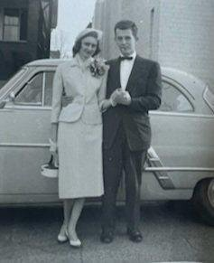
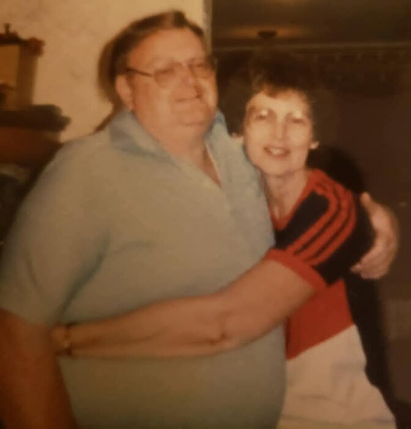

Ruth Laverne McKinney
10 July 1932 – 7 July 2018
Quick Facts
Immediate Family
Children
With Richard: Susan Ruth Shamblen (b. 25 November 1960, Cincinnati) FAMILY ACCOUNTTricia Marie Shamblen (b. 22 April 1965, Cincinnati; deceased 2016) FAMILY ACCOUNT
Siblings
- Jackson Ahmeek McKinney (b. 21 January 1924, Beckley; d. 2014)
- Edgar A. McKinney (b. 6 October 1928, Beckley; d. 2018)
- Edna McKinney (b. 12 January 1931, East Bank, Kanawha County, West Virginia; d. 2002)
All by shared parents Dallas Cecil McKinney × Laverne Hurt.
On Family Tree Sites
Couple Folder
Life Timeline
1932 · age 0
Born, Beckley, Raleigh Co., WV FAMILY ACCOUNT
1940s · age
Family moved to the Charleston area, then Cincinnati, WV and Ohio FAMILY ACCOUNT
1940 · age 7
Residence, Town, Raleigh Co., WV, with parents Dallas and Laverne DOCUMENTED
1955 · age 23
Married Lawrence Richard Shamblen, Kanawha County, West Virginia DOCUMENTED
1968 · age 36
Widowed, Cincinnati, Ohio FAMILY ACCOUNT
1976 · age 44
Married Tom McGregor, 10 Jul 1976; moved to Madeira, Cincinnati, Ohio FAMILY ACCOUNT
2018 · age 85
Died, 7 Jul 2018, Madeira, Ohio FAMILY ACCOUNT
Life Story
Ruth Laverne McKinney was born July 10, 1932, in Beckley, Raleigh County, West Virginia, the second child of Dallas Cecil McKinney and Laverne Hurt, "Nana" to the family. Like many coal-country families, they moved north for steady work, first to the Charleston area and later to Cincinnati.
Her mother cooked for the Baptist youth camp on Tyler Mountain, and there Ruth met Lawrence Richard Shamblen. They married in 1955 and made their home in Cincinnati, first in Bond Hill and then in Roselawn. Ruth was a teacher.
In October 1968 Richard was killed in a truck crash, and Ruth was left a widow at thirty-six with two small daughters. She taught school, raised her girls, and held the household together.
On July 10, 1976, she married James Thomas "Tom" McGregor in the garden at Kenwood Baptist Church, and they moved to Madeira. Their home became the center of the family: Christmas ham soufflé and sticky rolls, strawberry picking, and Sundays at Kenwood Baptist.
Ruth died at home in Madeira on July 7, 2018, three days before her eighty-sixth birthday.
When Richard and Ruth first planned to marry, Richard backed out, afraid of taking on the responsibility of being married. Ruth's parents said they never wanted to see him again. About a year later Betty got Ruth and Richard back together again through a meeting in Charleston, and they eventually married and moved to Cincinnati.
Ruth was a teacher. In high school, girls were not allowed to play full-court basketball, but Ruth's coach would sneak and let them — Dawn remembers what a big deal that was for her.
In her later years Ruth's health gave way. On a family trip to West Virginia for Aunt Sonia's funeral she fell at a rest stop; back in Cincinnati the hospital found a broken hip and a broken pelvis. She went through hospital, then a nursing home, then home, with a hospital bed set up in the living room. As dementia took hold she believed she was still in the nursing home and made escape plans with Dawn. On her last day Dawn came with Tori and Melissa, thanked her alone, and told her it was all right to go, to go be with Aunt Tricia and Nana. That night, with Tom and a hospice nurse beside her, Ruth died at home in Madeira. Both Ruth and Tom were cremated, and the ashes are with the family, along with what is left of Tricia's ashes, for the planned shared burial and garden dedicated to Ruth.
Photo Gallery







Sources and Evidence
- Couple profile, Lawrence Richard Shamblen × Ruth Laverne McKinney (family accounts) FAMILY ACCOUNT
- Spring Grove Cemetery burial card for Richard names Ruth Shamblen as lot owner (1968) DOCUMENTED
- Kanawha County marriage register, pp. 306–307, Lawrence Shamblen × Ruth McKinney, 1955 (public Geni document 6000000228455070134) DOCUMENTED
- 1940 United States Federal Census, Town, Raleigh, WV — Ruth, age 7, daughter of Dallas and Laverne DOCUMENTED
Grades: DOCUMENTED an original record says it · SUPPORTED several records point to it · FAMILY ACCOUNT the family's own telling · UNPROVED a lead, not proved.
Research Notes and Open Questions
- Find her 1932 West Virginia birth record image — Ancestry's WV Births Index entry (FHL Film 567211) is cited, but the image was not pulled; FamilySearch WV birth collections end 1930.
- Find her 2018 Ohio death record/obituary — no free index covers 2018; Ohio Department of Health order route is $21.50, open record, Rick's call, not ordered. No 2018 obituary was found free (the Brater Winter archive's Ruth McKinney is a different woman).
- Find a source for the 1976 marriage to Tom McGregor — Geni and WikiTree both lack one; Kenwood Baptist Church, Cincinnati, is the family-account place.
- MyHeritage tile (1000129) verified live 2026-11-03, signed in as Rick, in the Brewster Family Site (FTDNA). Genes Reunited shows Ruth in the McKinney Family Tree but gives no per-person link, so no Genes Reunited tile was added. Findmypast tile added 2026-11-03, verified live.
- Geni panel IDs for Ruth and family on Lawrence's panel (e.g. Ruth 6000000020115403865) are outliers — this page keeps only her canonical Geni ID 6000000150637733952.
DNA
No DNA matches linked yet.
Family Notes
Have a story, photo, correction or record? Leave a note in Ruth's Family Notes doc. We check each note and update this profile.
Profile history: Created 2 November 2026 from the family couple profile and research notes.